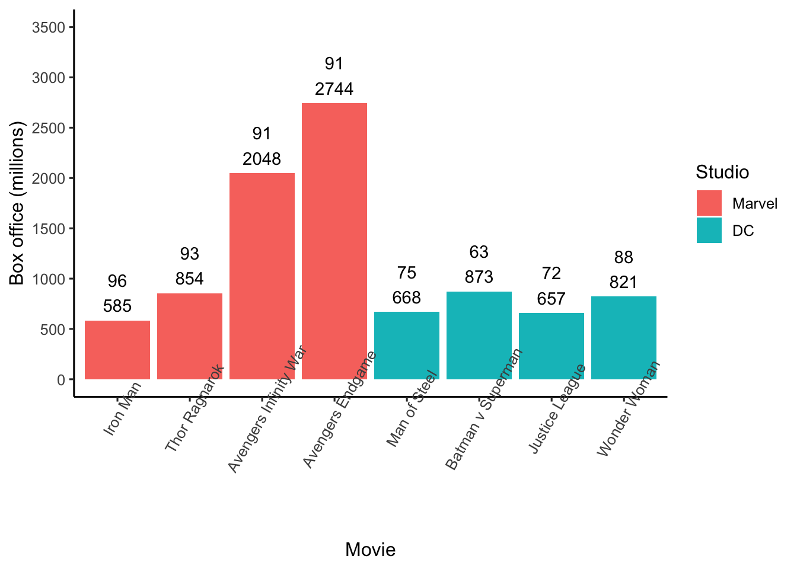

Chapter 5 Samples
Researchers are usually interested in the describing the attributes of a population; numbers that describe the population are called parameters. Two parameters that are frequently of interest are the mean and variance of the population. Unfortunately, it’s rarely possible to obtain information from every member of a population to calculate a parameter. Consequently, researchers use subsets of the population called samples to estimate parameters. Numbers calculated from sample data are called statistics. Typically, sample statistics are used to estimate population parameters.
Sample statistics, however, often differ from population parameters. The difference between a sample statistic and the population parameter occurs because the sample data is random subset of the population data — with correspondingly few observations. Sometimes the sample statistic will be higher than the population parameter; other times the sample statistic will be lower than the population parameter. Because random sampling is used to select the sample data the direction and magnitude of the difference between the sample statistic the population parameter will vary randomly.
Further complicating matter is the fact that the formula used for a sample statistic may or may not be the same as the formula used for the corresponding population parameter. This occurs because the purpose of the sample statistic is usually not to describe the sample. Rather the purpose of the sample statistic is to estimate the population parameter. Depending on the parameter, you may or may not be able to use the same formula with sample data as your would with the population data.
5.1 Notation
In the formulas below, when we refer the population, we use uppercase letters when indicating members (\(X\)) or the size (\(N\)). In contrast, when we refer to the sample, we use lowercsae letters when indicating members (\(x\)) or the size (\(n\)).
5.2 Estimating the mean
We begin with the simple case of using a sample mean to estimate population mean. This is a simple case because the same formula can be use at both the sample and population levels.
The population mean, \(\mu\), is a parameter calculated using the formula below:
\[ \begin{aligned} \mu &= \frac{\sum{X}}{N} \\ \end{aligned} \]
The sample mean, \(\bar{x}\), is a statistic calculated using the formula below. The bar of above the \(x\), indicates that it is a mean.
\[ \begin{aligned} \bar{x} &= \frac{\sum{x}}{n} \\ \end{aligned} \]
A sample mean is calculated using sample data which is a random subset of the population. Consequently, the sample mean (a statistic) is likely to differ the population mean (a parameter). This difference between the sample mean and the population mean could potentially be concerning. Statisticians know, however, that you can rarely learn anything from a single study or even a small set of studies. Consequently, they are more interested in what is true, on average, over a large number of studies.
5.2.1 Bias
One way of assessing the quality of the sample mean as an estimate of the population mean is by examining bias. If the average of many sample means corresponds is equal to the population mean, then we consider the sample mean an unbiased estimator.
The fact that the sample mean provides an unbiased estimate of the population mean can be illustrated with a computer simulation.
## pop_mean
## 1 172.5We can illustrate how random sampling works, with respect to estimating the population mean, by taking a large number of samples from the population. In the code below, we use the get_M_samples() command to obtain 1000 samples, each composed of 10 people. For each of these 1000 samples we calculate a variety of statistics and place themm in the many_samples data frame.
# set.seed ensures you get the same random samples
set.seed(1)
many_samples <- get_M_samples(pop.data = pop_data,
data.column.name = height,
n = 10,
number.of.samples = 5000)We use the head() command to see the first 10 rows (i.e., 10 samples of 1000 samples):
## sample.number n pop.M sample.M pop.var sample.var.n
## 1 1 10 172.5 175.5 157.5 189.85
## 2 2 10 172.5 169.6 157.5 196.64
## 3 3 10 172.5 161.7 157.5 92.61
## 4 4 10 172.5 178.4 157.5 102.04
## 5 5 10 172.5 174.7 157.5 350.81
## 6 6 10 172.5 166.0 157.5 236.00
## 7 7 10 172.5 172.4 157.5 149.84
## 8 8 10 172.5 175.3 157.5 179.81
## 9 9 10 172.5 167.2 157.5 128.96
## 10 10 10 172.5 169.0 157.5 75.20
## sample.var.n_1
## 1 210.94
## 2 218.49
## 3 102.90
## 4 113.38
## 5 389.79
## 6 262.22
## 7 166.49
## 8 199.79
## 9 143.29
## 10 83.56You can see the for each sample we indicate n (the sample size), pop.M (the mean of the population), sample.M (the mean of the sample), and a few other statistics. Because all the sample came from the same population you can that the population mean (pop.M) is constant across rows/samples. In contrast, the sample mean (sample.M) varies across samples due to random sampling error.
You can see the full extent to which the sample means vary by creating a graph with the code below. In this code, we use the pull() command to extract the value from the sample.M column and then we send them to the base R hisogram command, hist().

You can see the 1000 sample means plotted in this graph. Recall the population mean for heights is \(\mu = 172.48\) cm. Notice that most of the sample means cluster around this value. Also notice there is considerable variability about this value. Any given sample mean (\(\bar{x}\)) may differ substantialy from the population mean (\(\mu = 172.48\)). This variability illustrates the challenges with learning something from a single study - particularly a study with a small sample size.
Statisticians, recognizing the limitations of a single study, are not particularly concerned if a single sample deviates from the popualtion mean. That said, statisticians are very concerned whether the results of a large number of studies are correct – on average. That is, does the average of many sample means correspond to the population mean. If, on average, the sample mean is accurate we refer to it as an unbiased estimator.
In the code below we calculate the average of the 1000 sample means to determine if the sample mean is an unbiased estimator.
## mean_of_sample.M
## 1 172.5We find that the average of the 1000 sample mean is 172.55 which is very close to the population mean of 172.48. Note that when we did this, we used the same formula to calculate the sample mean as we did the population mean. The average of the sample means was not identical to the population mean but it was very close - it would have been exactly the same with many more samples. Consequently, the sample mean provides an unbiased estimate of the population mean. In other words, it makes sense to use the sample mean as an estimate of the population mean.
5.3 Estimating variance
Now we move to the more complex case of estimating the population variance using sample data. The population variance, \(\sigma^2\), is a parameter calculated using the formula below:
\[ \begin{aligned} \sigma^2 &= \frac{\sum{(X - \mu)^2}}{N}\\ \end{aligned} \]
The sample variance, \(s^2\), is a statistic calculated using the formula below. The formula is the same as at the population level but we use a different notation because it is a sample.
\[ \begin{aligned} s^2 &= \frac{\sum{(x - \bar{x})^2}}{n}\\ \end{aligned} \]
A sample mean is calculated using sample data which is a random subset of the population. Consequently, the sample mean (a statistic) is likely to differ the population mean (a parameter). This difference between the sample mean and the population mean could potentially be concerning. Statisticians know, however, that you can rarely learn anything from a single study or even a small set of studies. Consequently, they are more interested in what is true, on average, over a large number of studies.

## mean_of_var.n
## 1 141.9## mean_of_var.n_1
## 1 157.6